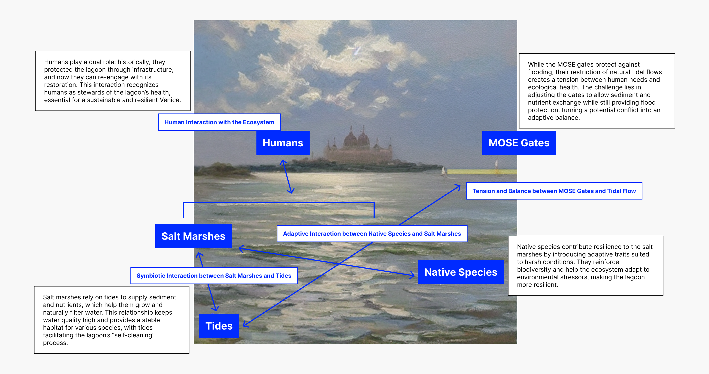
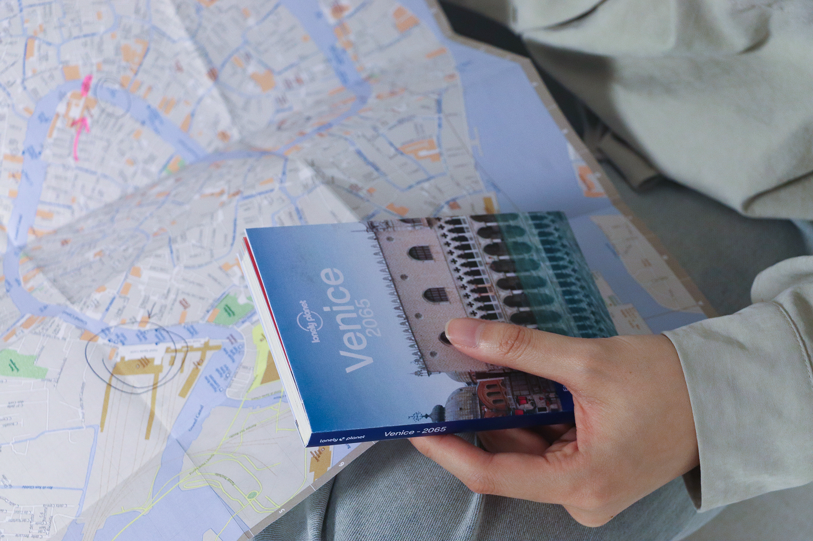
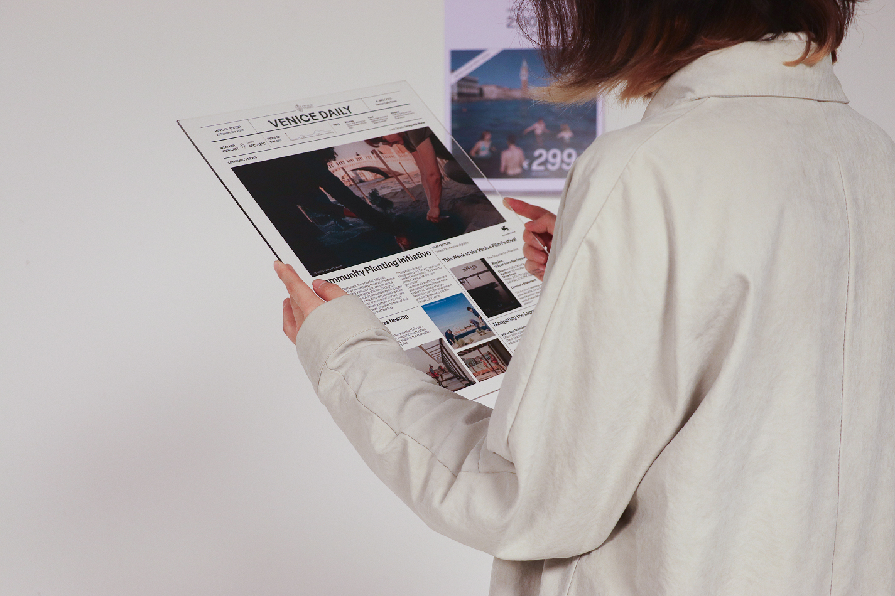
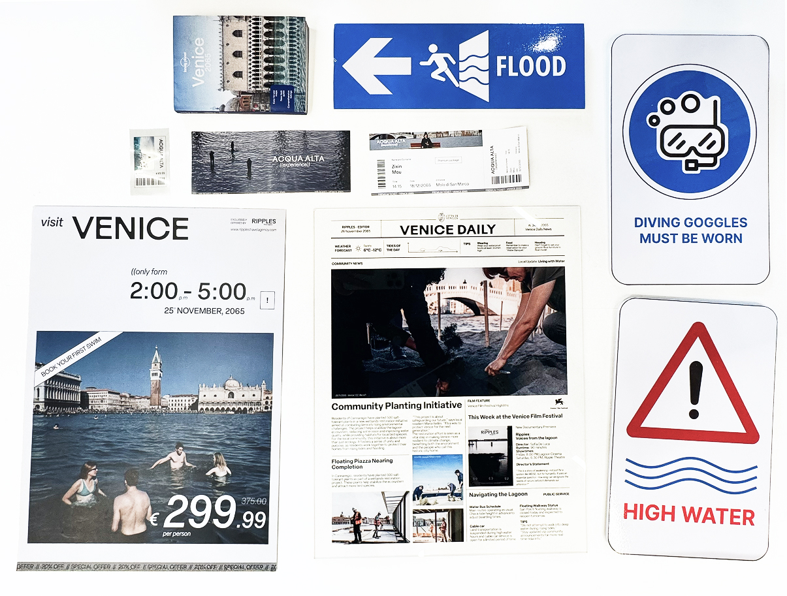
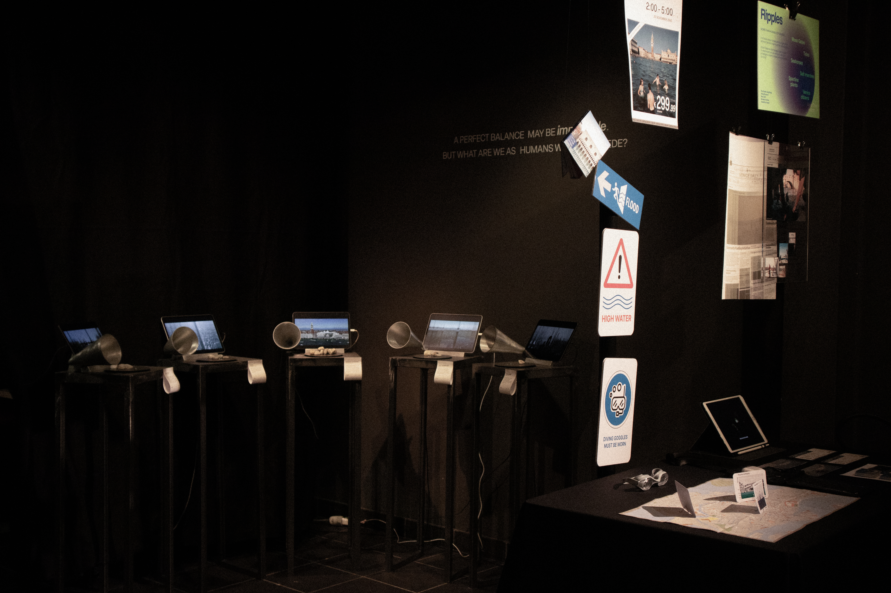
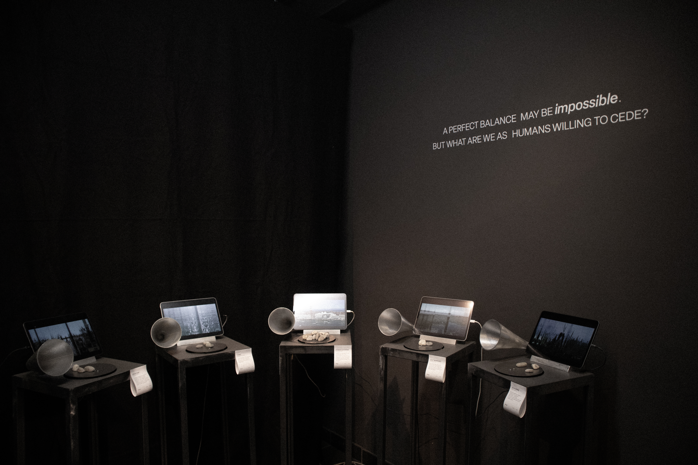
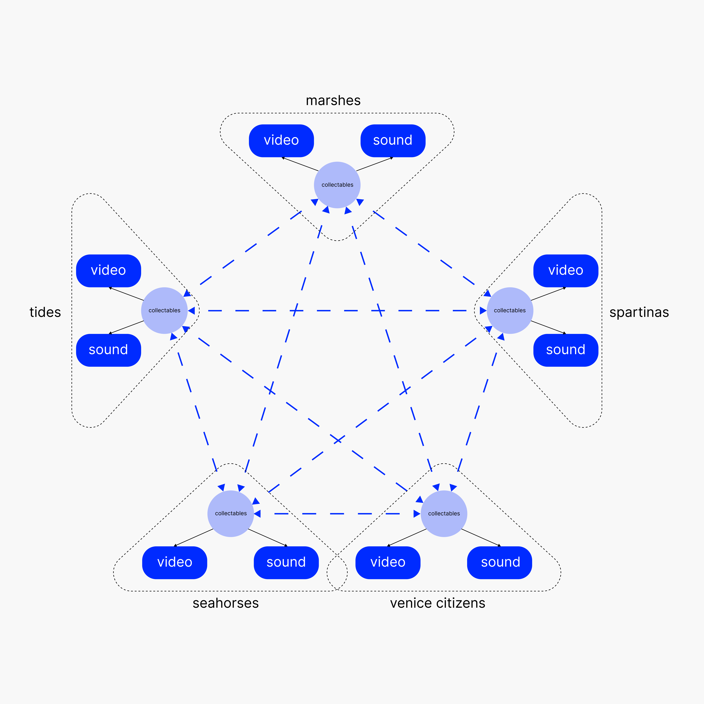
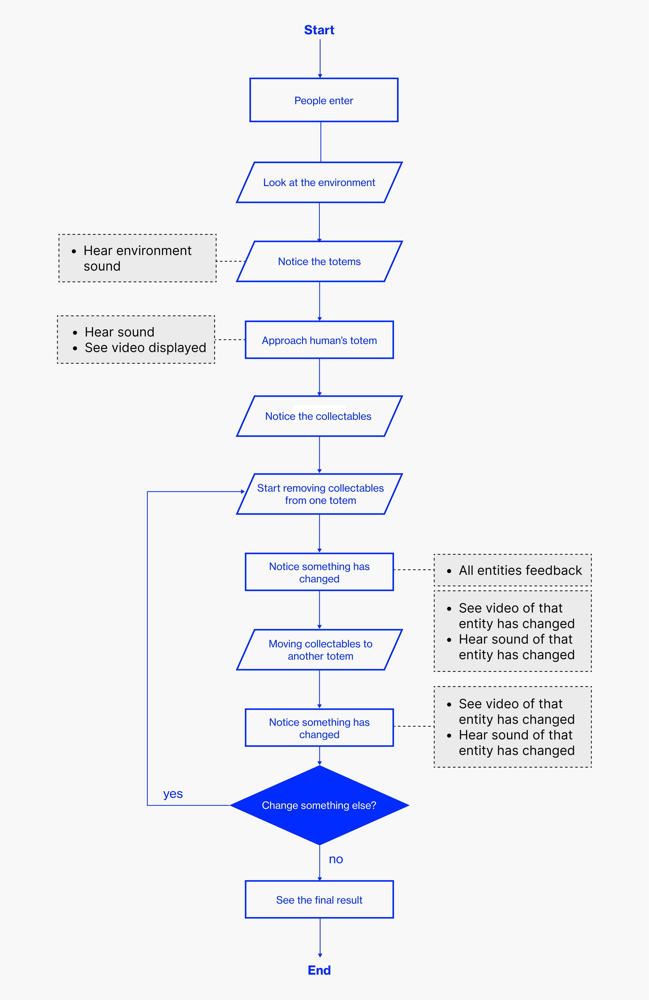
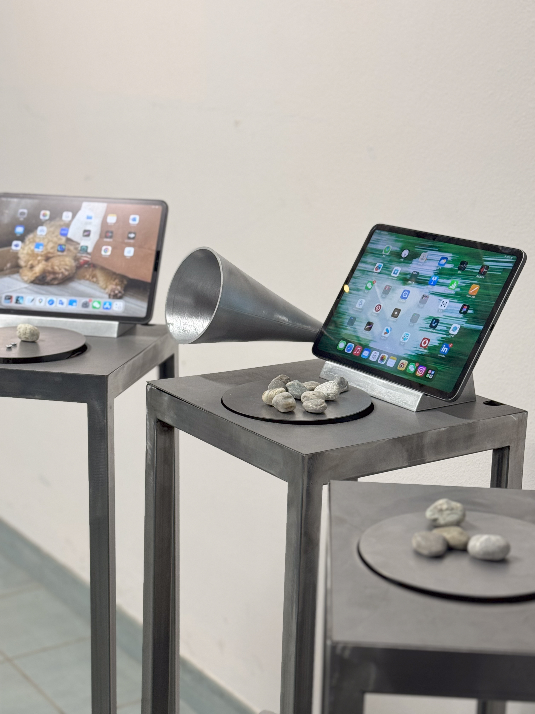
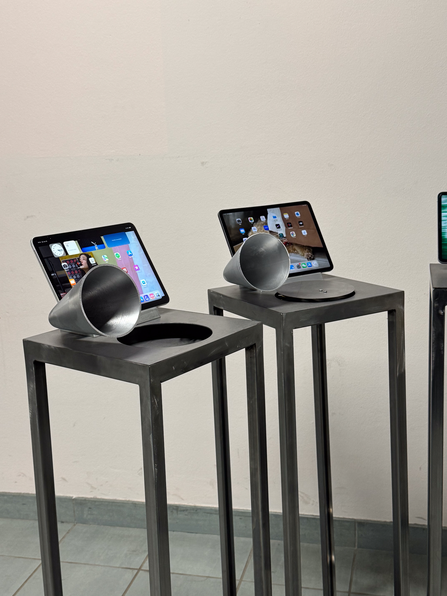

Ripples
Sep 2024 - Jan 2025
Sep 2024 - Jan 2025
Interactive installation exploring ecological justice through a more-than-human perspective, set in a speculative future of the Venetian Lagoon. Visitors participate in a shared governance scenario with non-human entities, experiencing environmental negotiation through audiovisual feedback triggered by weight shifts. Demonstrated at ACM DIS 2025 in Funchal and featured at Milan Design Week 2025.
Ripples: Voices of the Lagoon is an interactive installation that explores ecological justice through a more-than-human lens. Set in a speculative future of the Venetian Lagoon, the installation invites visitors to participate in a shared governance scenario with non-human entities such as salt marshes, mollusks, and even the MOSE infrastructure. By translating weight shifts into audiovisual disturbances, Ripples offers a multisensory experience of imbalance and environmental negotiation.
A broken more-than-human body

The Venice Lagoon is a dynamic ecosystem shaped by different entities. In response to increasing floods, the MOSE flood barrier system was constructed to protect human settlements. While effective in blocking high tides, MOSE has unintentionally disrupted the lagoon's natural hydrodynamics, reducing sediment circulation and threatening the survival of salt marshes and species like seahorses that rely on them.

Prioritizing human safety and urban preservation at the expense of ecological balance, the MOSE system exemplifies an anthropocentric approach to environmental control. In response to the limitations of human-centered decision-making, Ripples explores the possibility of a multi-species governance model, a system in which both human and nonhuman entities are considered stakeholders in the ecological future of the lagoon.
An interactive narrative


Our storytelling sets the scene in a future Venice, where all the entities that inhabit it share equal governance. In this scenario, Venice is frequently flooded due to the fair and balanced use of the MOSE gates. This idea is explored through an exhibition of artefacts from this future, including a map of Venice underwater, a pair of goggles and tickets for the Ripples experience. After setting the scene, visitors are invited to participate in an interactive installation and reflect on the choices they would make in such a scenario.

The experience

The installation invites the audience to redistribute pebbles among the five entities of the lagoon, simulating an act of ecological decision-making and negotiating privilege, attention and balance across species.
Each choice made by a participant is translated into visual and auditory feedback. The clearer an entity's voice and the brighter its form, the more it has received. The less an entity receives, the more it fades into distortion and noise.
Each choice made by a participant is translated into visual and auditory feedback. The clearer an entity's voice and the brighter its form, the more it has received. The less an entity receives, the more it fades into distortion and noise.




The installation development


Each totem includes a screen and a speaker that display the corresponding entity’s video and sound. Additionally, a scale with a limited number of rocks symbolizes the privileges and resources available for distribution among the lagoon's entities. Visitors interact by moving these rocks between totems, affecting both the visibility and audibility of each entity—making them more or less perceivable based on the resources they receive.
This reflects the real issue in the Venice Lagoon, where resources are scarce and often allocated primarily to humans, leaving other entities struggling to survive.
This reflects the real issue in the Venice Lagoon, where resources are scarce and often allocated primarily to humans, leaving other entities struggling to survive.


The totems are handcrafted and made of laser cut and soldered metal. The supports for the screens and its decoration are 3D printed by us. All extra information can be found in the annexed files.
Exhibitions & Public Showcases
Ripples has been exhibited at DIS'25 in Funchal, Madeira, and has been published as a demonstration paper (linked in the project details). In addition, the installation has been showcased at the following events:
_DIS2025 Conference Demo Madeira, Portugal | 5-7 July 2025
_MORE-THAN-HUMAN AI | TOWARDS RESILIENT CLIMATE FUTURES EDME Lab, Politecnico di Milano, Italy
_Politecnico di Milano Open Day Milan, Italy | 29 March 2025
_Interdependence x Milano Design Week Special Interactive Afternoon | Fuorisalone 2025 Fabbrica del Vapore, Milan, Italy | 11 April 2025
_MORE THAN HUMANS - THE FUTURE IS MULTISPECIES Bovisa Campus, Milan, Italy | 10 June 2025
_MORE-THAN-HUMAN AI | TOWARDS RESILIENT CLIMATE FUTURES EDME Lab, Politecnico di Milano, Italy
_Politecnico di Milano Open Day Milan, Italy | 29 March 2025
_Interdependence x Milano Design Week Special Interactive Afternoon | Fuorisalone 2025 Fabbrica del Vapore, Milan, Italy | 11 April 2025
_MORE THAN HUMANS - THE FUTURE IS MULTISPECIES Bovisa Campus, Milan, Italy | 10 June 2025
my responsibilities
team members
links
tags